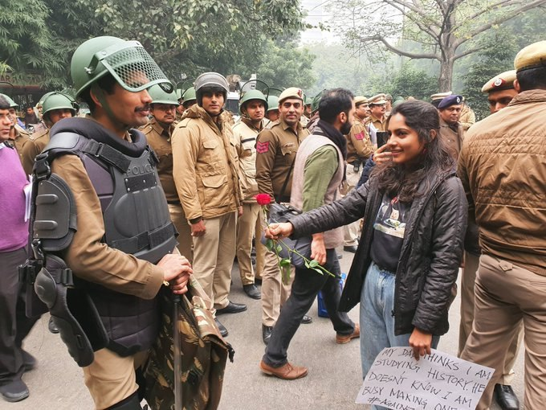

A casual chat I had with a couple of peers who sincerely engaged with me over a matter of systemic limitation
I have chosen to record and save this seemingly banal conversation not because something new was discovered but because I want a record of the language I employ in describing my political aspirations in conversation. If you recognize any of these texts from you, I apologize for having violated your privacy but I tried to ensure that you would remain anonymous. This is for my personal record, and I suppose an attempt at curating a conversation in public.
===========
20 Dec 2019
===========
<*- read something that isn't the amateurish political perspective of some 20somethings on an IM app
VS:

TY:
wow. didn't know that to get a rose from a qt i had to be a cop taking a break from following orders beating up protestors.
VS:
-_-
TY:
she's v cute and studies history. my type although not very smart.
VS:
How do you know that she isn't smart?
TY:
>offering rose to person with power/authority present on the premise to squash protests of her desperate peers - either for a photo or under the assumption that it'll be effective
VS:
I mean, it's a gesture to make peace with the police while carrying out a peaceful protest.
The intention isn't to rile up the police but to protest for your rights.
And now you will say that you can't do both at the same time.
TY:
isn't everyone sort of exhausted with peace-marches/peace-protests having seen it been practiced to no effect?
i mean, if the government was interested in negotating, they wouldn't be sending cops
also, it's difficult to define peace/violence imo.
isn't a person burning a bus down to protest less violent than say a 'legal' policy of distribution that deprives thousands of bread/land? in that he is using direct action against state power given a monopoly on violence by us in the majority.
SB:
Someone's against expansion of the state
TY:
kek. ya we should let corporates decide on matters of public movement across borders
oh wait..
https://www.reuters.com/article/us-usa-immigration-children/first-stop-for-migrant-kids-for-profit-detention-center-idUSKCN1Q3261
SB:
this is retarded idek what point you're making
corporations have always been in favour of open borders you dodo
TY:
ya ya i know. flexible labor movt et all
it helps them if a greater number of moving workers compete for same jerbs. more efficient for production or w/e
SB:
cheaper labour
yes
but also, lets labour go wherever they are priciest
and prevents corporations from exploting local labour supply gluts
TY:
its the damn retarded regulatory behemoths in the form of states that prevent corporate behemoths from doing all the good in the world and being considerate of externalities amirite
SB:
so are you a statist or not
TY:
idk fam. i find state power disturbing. and find their regulatory bureaucratic mechanisms to keep corporate behemoths in check inefficient and /problematic/.
otoh i also don't find much basis in inherited private property which is guaranteed protection/maintenance by state power.
it's hard to imagine communities that don't involve dominance of corporate/capital power or state power.
damn i cant find my ancap meme stash
SB:
patchwork ftw
I think this is backwards
or, maybe, deontological instead of consequentialist
you're trying to minimise 'problematic' behaviours
instead of trying to see how we can maximise, say, material prosperity and liberty
e.g. you'd find market share/monopoly problematic
even if the reason for market dominance of a producer is economy of scale/innovations
TY:
inb4 it can be pareto efficient system of distribution
i hate using that term
i meant to clarify why i don't subscribe to statism or whatever not-statism is (corporatism?). because their current role allows them power that leads to reduction of liberty/prosperity
SB:
libertarianism, not corporatism
TY:
hmm. how is a libertarian different from ancap.
SB:
idk tbh
TY:
cus as far as i see it. current libertarians rely on the police provided by the state to keep their property.
and without the state (which is the body defining the rules of property) , a libertarian's property is free game - or I guess it doesn't make sense to me to speak of property then.
SB:
why not use free services if they're already paying tax
TY:
?? I don't understand how a paid service is free
SB:
they don't get a choice on whether to pay tax
only choice is whether to use legal protections for which you do not need to pay additionally
TY:
How I see it is less a libertarian using a service provided by an independent state but more, that a person can claim any effective ownership and call themselves a libertarian through the rules/legality/enforcement of a constructed state in the first place
That for me to meaningfully state "I own land that I have liberty to use as I see fit": I already am relying on a socially accepted system of rules of power of the state to make that sentence meaningful.
SB:
there doesn't exist any hospitable abandoned, untaxed land out there that's not someone's territory
TY:
Sadly
Everything subsumed under systems of property protection or expansion mechanisms
What do you expect to see happen on the discovery of new land?
SB:
I mean seasteads are still a possibility tho
TY:
Eh. Transport, construction, development, services cost labor. A desirable seastead is likely behind a paywall not accessible to you.
Unless you're suggesting a group of libertarians COLLECTIVELY decide to build and inhabit a seastead. How would they do it.
is it not in the interest of libertarian property owner to stake claim of unclaimed resourceful land and to be able to do so first through its annexation by their state?
SB:
true
TY:
as far as i see it, property ownership has led to privatisation and lack of land. and instead of providing liberty, it fixes outcome through gradations of paywalls that determine outcome (kind of like tinder? linkedin/insrance/etc life is pay2play)
my primary interest is in seeing non-scarce resources freed from paywalls and property capture and become publicly accessible which will free the other from subjugation to massive property owners relying on threats of dispossesion/scarcity to exercise power and dictate terms that limit choice/freedom and cause increase in competitive advantage
basically. if food/shelter is publicly mediated, there's lesser reason to be in an unfree 'job' or to suffer malnutrition when grain is physically available but locked
VS:
but if people who earn more want a bigger shelter, can they buy it ?
Or by it being made public, you only have the option of staying in state provided flat/residence.
TY:
idk. most people envision a state as 'government owns everything' which is neither ideal nor practical. the current state is largely imo a property definition/protection mechanism which checks owner's externalities. and state officials can't not have perverse incentives that cause corruption/inefficiencies because social life is mediated by wealth aggregation
At the moment, I can tell with certainty that neither I nor anyone else made any choice or meritorious deserved effort to be born into the amount of property we did - something that will determine life outcomes till we die (And more sharply so as everything enters paywalls). And every property owner relies on a common socially held system to make the concept of 'property' meaningful sense - one that i see as inevitabbly producing inequality, fixing outcome, reducing liberty.
I think better systems/concepts of social participation are possible which will only emerge when current will have been found inadequate by a large majority.
for starters, automate farming and house production, make at least that shit guaranteed (as opposed to locked/hoarded) so that these insecurities are eliminated.
but then you realize, to move from your house to the grocery store and back you need money for car/gas. that electricity/smartphones are behind paywalls. so you're back into the necessity of working a job for someone else on someone else's terms.
something will need to change radically. newer terms of describing social activity in forms that abstract the human will/desires better maybe.
since that will not be in the interest of large property owners and their employed policemen, it will likely have to be done by force. not roses.
and like we went from monarchism with religious right to property to capitalism with inherited/annexed property. we will go to something newer.
TY:
@SB: do you think austrian economics relies on the conception of a person as an individual making choices which presumes (and this might sound retarded), a soul in the behavioral/philosophical sense - choices not made causally or in social contingency but made in vacuum
SB:
Idk much about Austrian school but it do be retarded tho
I don't get the distinction
Just prax it desu
Nothing happens in a vaccum
TY:
ya i agree
SB:
Wym by causally or social contingency
TY:
like, i see most choices are made in response to or caused by social factors. to the point that i see all choices as being made inevitably as a function of socially contingent circumstances.
like you use "desu" instead of "tbh" because you browse 4chan, you browse 4chan because ... etc.
or the concept of liberty (tied to choice) in a system that produces exactly a singular mediating incentive.
so the concept of a choice ceases to hold much meaning to me
SB:
So determinism
TY:
idk. choice/agency are words that confuse me. or seem to imply an individual soul that is acts independently of social forces
SB:
Why socially
Social science cannot precisely predict what I'll use - still leaves uncertainty
TY:
yeah true
because everything you conceive of - you do through language, which is a social phenomenon
SB:
Nah
RV:
everything is owned by something
except my mistakes
TY:
speaking of mistakes - i think they're usually defined in relation to 'inefficient/bad choices'. and idk what choices are anymore. you just did what your models at the time conceived was ideal.
some people write that freedom from property owner's resource control could mean freedom of children from parents, women from husbands, employees from employers, abused from abuser maintaining stronghold via economic threat/power
i wonder how different life can be
Pretty utopian dreams
Of an unreachable communist future
--------------
AK:
how are wages coming along ?
TY:
idk if wage maximisation is entirely aligned with my personal desires.
AK:
what are your personal desires that you want to achieve ?
TY:
idk man, i think i live a materially comfy life in LA but i still find it terribly limiting. and i find marriage limiting too. idk what's a good way forward.
AK:
what is it that you feel you lack currently ?
TY:
a social fabric where i can exist as something more than a person who spends the first 8 hours working on projects he doesn't care about and the next 8 hours in an atomic, individualistic consumerist culture that promotes property accumulation as the highest goal in life. autonomy to pursue interests without significantly giving up on other aspects of me. future material security for those close to me. total lack of any political power. people who are willing to engage in newer forms of intimacy and relationships not founded on ownership and control.
i have access to great food, cheap phones, pleasant climate. but all supporting an empty life.
AK:
i personally believe going forward you won't get that autonomy as you will always have someone to look after to, a friend, family, spouse, gf, bf etc.
TY:
i don't think intimacy and mutual support hinders autonomy.
i think strictly defined roles hinder autonomy.
TY:
well are you providing support because you want to and see meaning in it. or because of a role you're locked in which comes with the expectation of it.
the role of an employee, husband, son i find limiting.
the role of an intimate friend i do not.
yeh. so discarding roles and engaging more contextually and specifically is nicer imo.